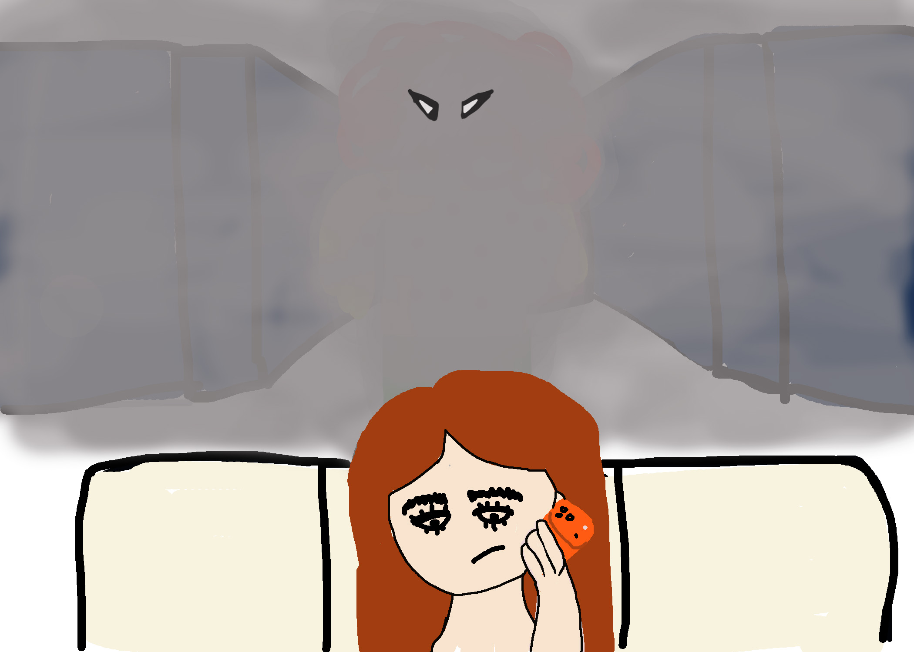

Her friend's name pops up on the screen. Sol remembers that her friend Flor was going to call her that night.
This would be a perfect moment for Sol to say what's going on and get help…... but Flor just broke up with her boyfriend beacuse he cheated on her, and her uncontrollable crying distracts Sol from what she's dealing with
She sits with her back to the hallway, not able to see or hear what's happening behind her.
